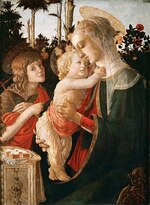
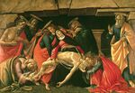
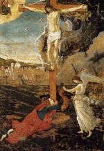

Sandro Botticelli
Zum Vergrößern der Abbildung bitte auf das Bild klicken
1 
2 
3 
4 
5 
6 
7 
8 
9 
10 
11 
12 
13 
14 
15 
16 
17 
18 
19 
20 
21 
22 
Alessandro di Mariano Filipepi, bekannt als Sandro Botticelli
(Florenz 1445 - Florenz 1510)

Einführung
Der Sohn des Florentiner Lohgerbers Mariano Filipepi, Alessandro, kurz Sandro genannt, trägt aus unbekannten Gründen den Beinamen Botticelli. Gegen 1464 geht er für etwa drei Jahre bei dem bedeutenden Maler Filippo Lippi in die Lehre. Wenngleich er von seinem Lehrmeister eine reiche und elegante Formensprache gelernt hat, scheint er sich letztendlich noch mehr für die Arbeiten der beiden Maler der zweiten Generation der Florentiner Renaissance zu interessieren: Andrea Verrocchio, für den er einige Zeit tätig war, und Piero Pollaiolo. Bei ihnen imponiert ihm die schwungvoll erregte, feingliedrige Linienführung, die bei ersterem zur neuartigen Darstellung der Anatomie bei letzterem zur Darstellung der Bewegung genutzt wurde. Der Bildhauer Agostino di Duccio (1418-nach 1481) dessen schwungvoller Stil ihm ebenfalls imponierte, war ein weiterer Lehrmeister Botticellis.
Ein Maler auf der Suche nach seinem Stil
Aus dieser ersten Periode stammen mehrere Madonnen mit Kind (1), zumeist von Engeln umgeben, die sich durch höfische Anmut auszeichnen; es lässt sich deutlich erkennen, wie der Einfluss des Lehrmeisters Lippi allmählich dem durch Verrocchio weicht. Zu seinen Madonnen aus dieser Zeit zählen jene in der Accademia und in der Galleria in den Uffizien in Florenz, im Nationalmuseum Capodimonte in Neapel, im Fesch-Museum in Ajaccio, im Louvre, in der Londoner National Gallery in der National Gallery in Washington, etc. Dank der Fürsprache von Tommaso Soderini, einem Vertrauten der Médicis, erhält Botticelli 1470 seinen ersten offiziellen Auftrag: Fortitudo (2) – eine allegorische Figur für das Handelsgericht von Florenz. Dieses, heute in den Uffizien ausgestellte Gemälde zeigt deutlich, dass die Einflüsse von Verrocchio und Piero Pollaiolo, dessen Gruppe allegorischer Figuren er mit dieser letzten vollendete, endgültig die ursprüngliche Prägung durch den ersten Lehrmeister Filippo Lippi ablösen. Die Madonna mit sechs Heiligen (3) (Uffizien) ähnelt im Stil der Fortitudo und entstand etwa auch zur gleichen Zeit. 1472 trat Botticelli der Compagnia de San Luca bei. In dieser Zeit entstanden die beiden kleinen, brillant ausgeführten Gemälde der Rückkehr der Judith (Uffizien). Der heilige Sebastian (4) aus dem Berliner Museum stammt wahrscheinlich aus der Santa Maria Maggiore in Florenz und entstand wahrscheinlich etwas später; Die Körperspannung und Anatomie erinnert an Pollaiolo, doch der meditative Ausdruck zeigt eine tiefere Spiritualität. 1474 wurde Botticelli nach Pisa berufen, um den Freskenzyklus des Campo Santo zu vollenden, doch er kann diesen Auftrag nicht übernehmen.
Förderung durch die Medicis
Wieder zurück in Florenz erhielt 1475 Botticelli den Auftrag, die Figur der Pallas für die Standarte von Giuliano de Medici anlässlich eines Turniers auf der Piazza Santa Croce zu malen: die Maler der damaligen Epoche empfanden derartige Aufträge nicht unter ihrer Würde. Botticelli erhielt somit Zugang zum Kreis der Medicis. Ein Freund dieser berühmten Familie, der Bankier Giovanni Lami, gibt bei ihm etwa zur gleichen Zeit das Bild Anbetung der Könige (5) (Uffizien) für seine Kapelle in der Kirche Santa Maria Novella in Auftrag. Eines der ersten großen Werke des Künstlers, in dem verschiedene Mitglieder der Florentiner Regentenfamilie Medici sowie der Künstler selbst dargestellt sind: Cosimo de Medici (genannt der Ältere), Piero I. de Medici, (genannt "Der Gichtige"), Giovanni, Lorenzo und Giuliano. Auch die sehr schönen Einzelportraits "Mann mit der Medaille Cosimos d . Ä." (Uffizien), und das "Porträt des Giuliano de Medici" (National Gallery, Washington) sind etwa dieser Zeit zuzuordnen.
1478 wurde Botticelli beauftragt, die gescheiterten und gehängten Mitglieder der Pazzi-Verschwörung zu malen; ein Werk, das leider nicht erhalten geblieben ist. Etwa um die gleiche Zeit herum schuf er das im Berliner Museum zu sehende Werk Madonna mit acht Engeln, ein "Tondo", das wahrscheinlich aus der Kirche San Salvatore al Monte stammt und vor allem sein wohl bekanntestes Werk, den Frühling (6) (Primavera), das 1477 von den beiden Medici-Brüdern Lorenzo und Giovanni di Pierfrancesco in Auftrag gegeben wurde, ursprünglich in der Villa di Castello in der Nähe von Florenz hing und heute in den Uffizien ausgestellt ist. Die lineare Anmut, mit der die Figuren dargestellt sind und mit der ein sensibles Abbild einer idealen Welt der Neuplatoniker dargestellt wird, bezeugt zugleich, dass Botticelli eine völlig eigene Sprache gefunden hatte. Sie findet sich zugleich in den beiden allegorischen Fresken der Villa Tornabuoni-Lemmi (heute im Louvre), deren Entstehungsdaten unbekannt sind: Lorenzo Tornabuoni vor den (Allegorien der) sieben freien Künste, in Gestalt von Frauenfiguren; Giovanna degli Albizzi mit Venus und den Grazien,.
Aufenthalt in Rom
1481 und 1482 weilt Botticelli in Rom. Dieser Zeitraum stellt eine seiner wichtigsten Schaffensperioden dar. Gemäß eines am 27. Oktober 1481 unterzeichneten Vertrags beauftragt der Papst Sixtus IV ihn, gemeinsam mit Cosimo Rosselli (1439-1507), Ghirlandaio und Perugin – und später auch Signorelli, le Pinturicchio (1554 ?-1613) und Piero di Cosimo (ca. 1462-1521) – die Fresken für die gerade im Vatikan erbaute Kapelle – die so genannte "Sixtinische Kapelle" - zu malen, die Szenen aus dem Alten und Neuen Testament sowie Elemente des Pontifikats zeigen. Botticellis Anteil besteht in den folgenden drei Werken: die Jugend des Moses, die Bestrafung der Leviter und die Versuchung Christi (7). Es sei angemerkt, dass jedes einzelne, wie es im Mittelalter üblich war, mehrere Episoden zur gleichen Zeit darstellt. Die brillante Anbetung der Könige der National Gallery in Washington ist ein weiteres der Werke, die der Künstler während seines Aufenthalts in Rom schuf.
Die Glanzzeit der Stadt Florenz
In Florenz agierten Lorenzo de Medici (der Prächtige) und seine Anhänger als passionierte Verfechter des Humanismus und fanden in Botticelli den Maler, der ihre Vorstellungen künstlerisch am besten umzusetzen verstand. Für Lorenzo und Giovanni di Pierfrancesco malt er auch kurz nach seiner Rückkehr die beiden mythologischen Gemälde der Villa di Castello, die heute in den Uffizien ausgestellt sind: Minerva und der Kentaur (8) und Die Geburt der Venus (9); Und wahrscheinlich fertigte er auch im Auftrag Lorenzo des Prächtigen die Serie von vier Gemälden zu Boccaccio's Gastmahl des Nastagio degli Onesti (10) an, von der sich heute drei Werke im Madrider Prado und eines in einer Privatsammlung in den USA befinden. Das Gemälde Mars und Venus (11) (Londoner National Gallery) ist wahrscheinlich von einer anderen berühmten Familie, der Vespucci-Familie, in Auftrag gegeben worden. Um 1485 herum kehrt der gereifte Künstler Botticelli zur Madonnendarstellung zurück; Die berühmtesten Madonnendarstellungen aus dieser Zeit sind Madonna mit dem Buch im Museo Poldi Pezzoli in Mailand, Madonna del Magnificat (12) und die Maria mit dem Granatapfel in den Uffizien, beides "Tondo"-Werke, sowie die Thronende Madonna (Bardi-Altar) (13) (Berlin), die von Agnolo Bardi für seine Kapelle in der Kirche Santo Spirito in Florenz in Auftrag gegeben worden war. Kurz vor 1490 erhält der Künstler einen der seltenen wahrhaften Großaufträge in seiner Karriere für die zwei großformatigen Werke: Altarretabel des Heiligen Barnabas (14) (Uffizien), geschaffen für die Florentiner Bruderschaft der Mediziner und Apotheker, das auf der Haupttafel eine thronende Madonna umgeben von sechs Heiligen und vier Engeln und auf der Predella verschiedene Szenen darstellt; und die von der Goldschmiedezunft in Auftrag gegebene Altarretabel der San Marco Kirche (Uffizien), auf der auf der Haupttafel die Krönung Mariae und vier Heilige und auf der Predella Szenen aus dem Leben der Heiligen dargestellt sind, und die deutliche Anzeichen dessen aufweist, dass auch seine Schüler an dieser Arbeit mitgewirkt haben.
|
Illustrationen zur Göttlichen Komödie von Dante Sandro Botticelli begann im Auftrag von Lorenzo di Pier Francesco di Medici ca. 1490 mit der Illustration der Göttlichen Komödie von Dante. Die Abbildungen vermitteln dem Betrachter die Faszination, die der Florentiner Künstler für dieses Meisterwerk der Poesie und des Humanismus von Dante Alighieri empfand.
|
Schlusskrise
Der Tod von Lorenzo dem Prächtigen 1492 setzt der Blütezeit der Stadt Florenz ein jähes Ende. Nach der Vertreibung des unfähigen Nachfolge-Regenten Piero II. de Medici errichtete Girolamo Savonarola einen diktatorischen „Gottesstaat“. Die politische und moralische Krise, in die dieser Bußprediger Florenz stürzte, erklärt zum großen Teil die Änderungen, die in Botticellis Werken der Spätphase deutlich werden. In diesen kommt eine derartige Frömmigkeit und religiöse Ergriffenheit zum Ausdruck, die eindeutig dem Einfluss Savonarolas zuzuschreiben ist.
In dieser Periode, in der auch die Abbildungen zu der Göttlichen Komödie von Dante entstehen (15), schuf der Künstler nur ein wichtiges weltliches Gemälde, die Verleumdung, für den Auftraggeber Antonio Segni nach den Beschreibungen des antiken Meisterwerks des Apelles; Doch auch hier ist der Humanismus von christlicher Reflexion. Durchdrungen. Bereits die um 1490 entstandene, aus der Kirche Santa Maria Maddalena dei Pazzi stammendeVerkündigung (16) (Uffizien) griff das Thema auf neue Art und Weise auf, indem es bewegende Posen und eine dramatische Atmosphäre schuf, die auf dem einige Jahre später entstandenen recht kühn aufgebauten Werk Madonna mit dem Kind und dem jungen Johannes der Täufer (17) (Palazzo Pitti) erneut anzutreffen sind. Die beiden Pietà, die um 1495 entstanden, von denen ein Werk in der Münchner Pinakothek (18) und eines im Museo Poldi Pezzoli in Mailand ausgestellt ist, bringen den Ausdruck größter Spannung und Tragik zum Höhepunkt. Und auch die Einzelfigur des Werks Die Verstoßene (Derelitta) (19) (Palazzo Rospigliosi, Rom), bei der es sich mit größter Wahrscheinlichkeit um die verstoßene Thamar handelt, verkörpert höchste Pein. Zudem schuf Botticelli jedoch auch kleinere meisterhafte Kunstwerke, die von weniger Bitterkeit geprägt waren, jedoch dem Künstler trotzdem aus der Seele sprechen, darunter: Hl. Augustinus beim Schreiben (Uffizien), die Verkündung und die Die letzte Kommunion des Hl. Hieronymus (20) (Metropolitan Museum, New York), eine Serie bestehend aus vier Gemälden mit Szenen aus dem Leben des Hl. Zenobius (London, New York und Dresden). Direkt unter Einfluss Savonarolas scheinen Mystische Geburt (21), zu sehen in der National Gallery in London (1501) und die Mystische Kreuzigung (vor dem Hintergrund der Stadt Florenz) (22) Fogg Art Museum in Cambridge (Massachusetts) entstanden zu sein.
Nach dem Tode Botticellis verliehen junge Künstler wie Michelangelo, Leonardo da Vinci, Andrea del Sarto und Raffael der Renaissance eine neue Ausrichtung. Botticellis nun bereits schon als überholt geltenden Kunstwerke gerieten rasch in Vergessenheit, und sollten erst im 19. Jahrhundert wieder „entdeckt“ werden und den Platz in der Kunstgeschichte einnehmen, den sie verdienen.
Linienführung, Bewegung und Farbe
Während der Florentiner Frührenaissance entsteht in der ersten Hälfte des 15.Jh. ein wichtiger, von den Malern Masaccio und Uccello begründeter Stil, dessen Vertretern es vor allem darauf ankam, eine realistische, lebendige Darstellungsweise und moderne Formensprache zu finden, bei der die exakte Perspektive sowie Farb- und Lichtführung eine wichtige Rolle spielten.
Botticelli maß diesen Aspekten im Allgemeinen keinen vordergründigen Wert bei. Im Gegenteil, oft lehnte er sich sogar dagegen auf. Dabei war es keinesfalls so, dass er zur Umsetzung eines ebenso präzisen wie kalkulierten Stils nicht im Stande gewesen wäre: die Werke Anbetung der Könige in den Uffizien und der National Gallery von Washington belegen beide, die Fähigkeit des Künstlers, einen exakt berechneten perspektivischen Bildaufbau zu erzeugen und dabei die harmonische Komposition des Gesamtwerks strikt zu wahren; Das Fresko desHeiligen Augustinus in der Ognissanti-Kirche in Florenz (gegen 1480) belegt durch die Plastizität der Figur den Einfluss durch Andrea del Castagno, wobei die Nebendarstellungen sich durch einen für den Künstler ungewohnt strengen Realismus auszeichnen.
Botticelli hätte sich in diese Richtung weiterentwickeln können, doch sein innerstes Selbstverständnis war das einer weniger geordneten Welt, die er mit faszinierender Poesie zu schmücken verstand. Seine Figuren unterliegen nicht der Diktatur des Raumes und erscheinen nicht in mathematisch berechneter, maßstabgetreuer Größe, sondern möglichst auf Betrachterhöhe vor einem Hintergrund, der die Tiefe zu begrenzen sucht. Dies gilt ebenso für Bauwerke, wie auch Vorhänge oder gar Landschaftsdarstellungen. Seine Figuren fügen sich anmutig in Werke im Rundformat "Tondo" wie zum Beispiel bei der Madonna del Magnificat, andere in gewaltige Gemälde Primavera (Der Frühling), einige - in religiös geprägten Werken - in einen mittelalterlichen Bildaufbau wie z.B. in den Fresken der Sixtinischen Kapelle und der Mystischen Geburt (London); was jedoch alle gemein haben, ist, dass sie ein leichter, fast musikalischer Rhythmus durchzieht, der die Bewegungen als Art Tanz erscheinen und die Formen an Leichtigkeit gewinnen lässt. Diese für Botticelli sehr wichtige Bedeutung der Bewegung wird durch seine meisterhafte Linienführung umgesetzt, der er einen größeren Wert beimisst als der Räumlichkeit. In seinem schwungvoll erregten, wechselhaften Stil und der dem Künstler eigenen ausgeprägten Sensibilität stellt er seine menschlichen Figuren mal leicht beschwingt mal qualvoll gepeinigt dar, er besteht an einigen Stellen auf verfehlten Konturen oder Asymmetrie der Gesichtszüge; Doch eben diese Unregelmäßigkeit ermöglicht es ihm, sich von einem dekorativ-arabesken Ornamentalstil abzusetzen und ist Ausdruck tiefer Reflexion.
Die außerordentliche Bedeutung, die Botticelli der Linie beimaß, führte beim Künstler nicht zu jener Gleichgültigkeit gegenüber dem abgebildeten Sujet, die man häufig der Florentiner Schule vorwirft. Die feine Ausführung seiner Werke und sein Geschmack farbliche Gestaltung zeigen sich vor allem in seinen meisterhaften kleineren Gemälden, und zwar während seiner gesamten Schaffensphase von Der Rückkehr der Judith bis zum Leben des Hl. Zenobius. Doch dies gilt auch für seine größerformatigen Gemälde und Fresken sowie insbesondere für seine Tondos. Ganz gleich ob Botticelli leuchtende Farben wie in der Madonna del Magnificat wählte oder matte Töne wie in der Geburt der Venus oder eher etwas gedämpfte Farben wie beim Werk Primavera (Frühling); die Werke sind stets farblich harmonisch und transparent und scheinen von einem kristallklaren Licht durchflutet.
Humanismus und Christlicher Glaube
Sein linearer, geradliniger Stil und dessen schwungvoll erregte Anmut hätten aus Botticelli wohl einen Vorboten des Manierismus des 16. Jh. gemacht, wenn er nicht vor allem den spirituellen Bedürfnissen seiner Zeit nachgekommen wäre. Die Werke Botticellis sind Ausdruck des Florentiner Humanismus, und insbesondere des neoplatonistischen Gedankenguts des Kreises um Lorenzo den Prächtigen herum und seines wortgewaltigen Vertreters Marsilio Ficino. Nach dieser Philosophie galt es die Welt als Reflexion der Welt von Ideen zu sehen. Der Humanismus zeigt sich in Botticellis Werken selten von seiner archeologogischen Seite, mit Ausnahme der Darstellung einiger monumentaler Bauwerke wie dem Triumphbogen Arco di Costantino auf den Fresken der Sixtinischen Kapelle oder im Werk die Verleumdung des Apelles nach den Beschreibungen des antiken Meisterwerks von Lukian und L. B. Alberti – dies wäre jedoch um so schwieriger gewesen, wenn es der Künstler nicht verstanden hätte, den Werken eine gewisse Dramatik zu verleihen. Viel häufiger schuf der Künstler, nach Absprache mit seinen Mäzenen teilweise esoterisch wirkende mythische Darstellungen. Das Werk La Primavera (Der Frühling) zum Beispiel, für das es widersprüchliche Deutungen gibt, scheint auf beiden Seiten der Liebesgöttin Venus die körperliche Liebe der geistigen gegenüberzustellen. Die Geburt der Venus kann man als Hymne an die Fruchtbarkeit interpretieren und Minerva bändigt den Kentaur als Symbol für die Widersprüchlichkeit der menschlichen Natur.
Doch all dies wird mit solcher Zurückhaltung ausgedrückt, dass deutlich wird, wie sehr Botticelli den christlichen Idealen verbunden blieb. Der Übergang von seinen profanen zu seinen sakralen Werken ist fließend, und auch sie sind von einer außerordentlich tiefgründigen Darstellung des Sujets geprägt: für den Künstler sind Humanismus und Religion die beiden Seiten der gleichen geistigen Suche. Doch die Seelenruhe der Madonnen seiner frühen Schaffensphase weicht allmählich einem Ausdruck wachsender Unruhe. Bereits die Madonna mit dem Granatapfel bringt eine Vorahnung der Passion zum Ausdruck. Dieser Pessimismus verstärkt sich in der späten Schaffensphase des Künstlers noch weiter, in denen er den Humanismus gar ganz in Frage stellt. Die Tragik erreicht ihren Höhepunkt in den Werken Pietà und Kreuzigung (zu sehen im Fogg Art Museum) und schließt sein Schaffen mit einer Art Vorhersage des Unglücks für Florenz ab.

© 2006 Umanista.Net